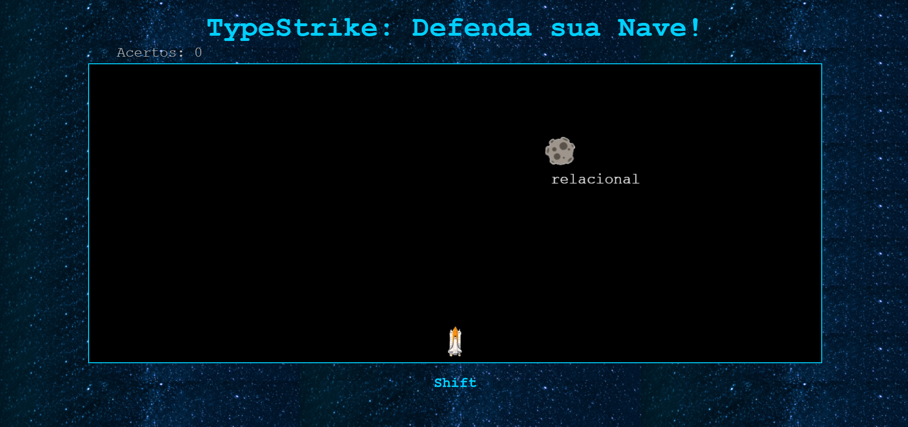
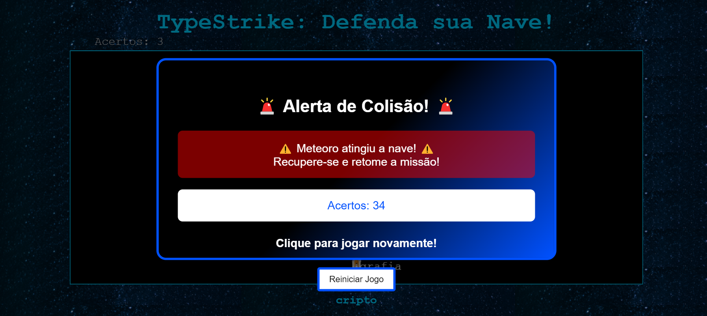

Sobre o Jogo
Em TypeStrike, o jogador assume o controle de uma nave espacial em um cenário cósmico, onde deve defender sua nave de meteoros ameaçadores.
Cada meteoro carrega uma palavra que o jogador deve digitar corretamente para destruí-lo e evitar que atinja a nave.
Com um design vibrante e uma mecânica de digitação desafiadora, TypeStrike combina ação espacial com treino de habilidades de digitação, proporcionando uma experiência divertida e educativa.
Aumente sua pontuação ao acertar palavras e encare novos desafios conforme o jogo avança!
Prints do Jogo
 Objetivo
O objetivo principal de TypeStrike é aprimorar suas habilidades de digitação enquanto se diverte protegendo sua nave espacial de meteoros perigosos.
Clique aqui para acessar o jogoInformações do Jogo
Nome do Jogo: TypeStrike Defensores Espaciais
Descrição: TypeStrike é um jogo que combina habilidades de digitação com ação espacial. O jogador deve digitar rapidamente para destruir meteoros que ameaçam sua nave, tornando a prática de digitação divertida e desafiadora.
Gênero: Treinamento de digitação, Ação
Plataforma: Navegadores de internet (Web-based)
Público-Alvo: Estudantes, Profissionais e qualquer pessoa que queira melhorar suas habilidades de digitação enquanto se diverte.
Desenvolvedores do Projeto
Júlio Gabriel
Emerson Junior
Carlos Eduardo
Caio Ribeiro
João M. Gregorio